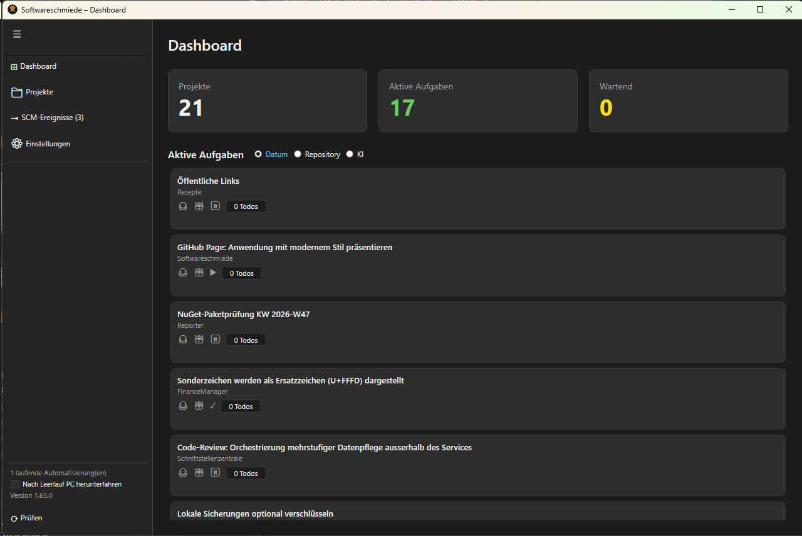
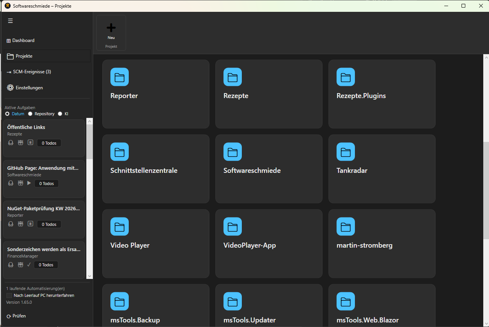
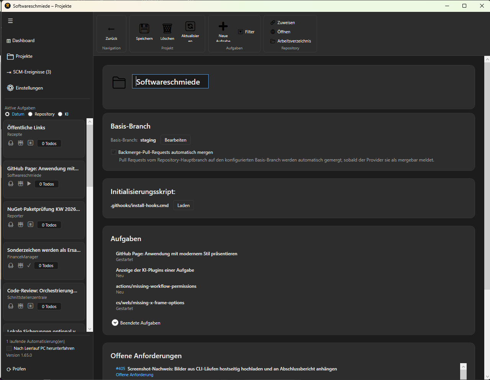
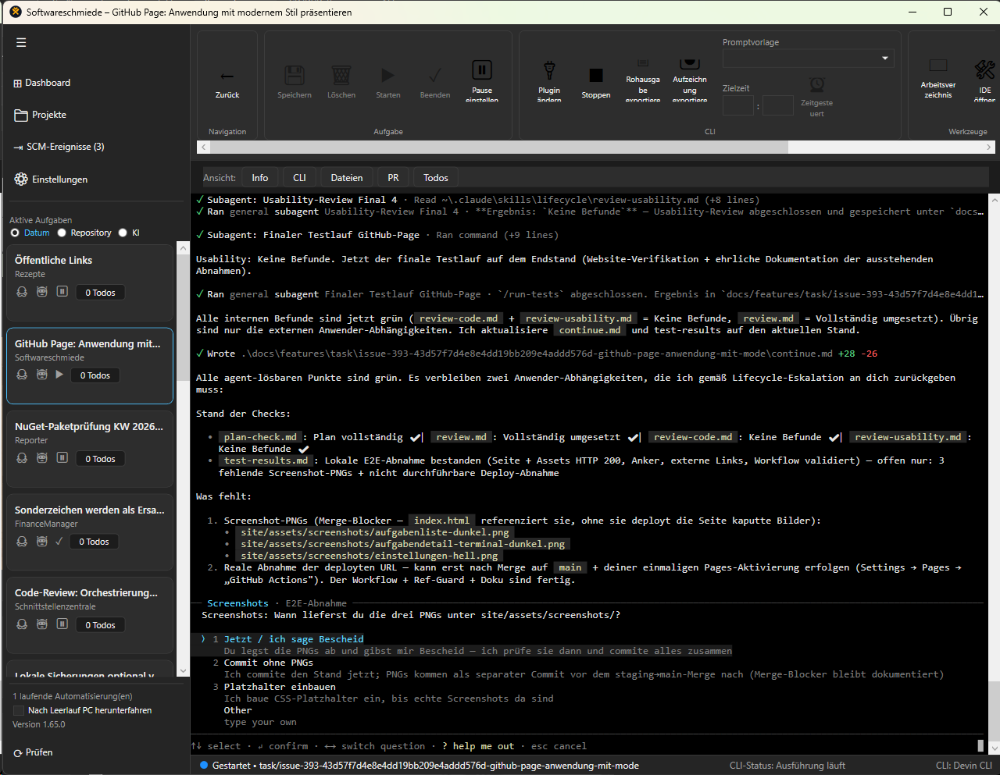
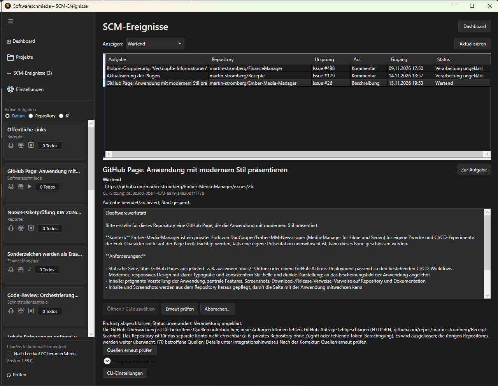
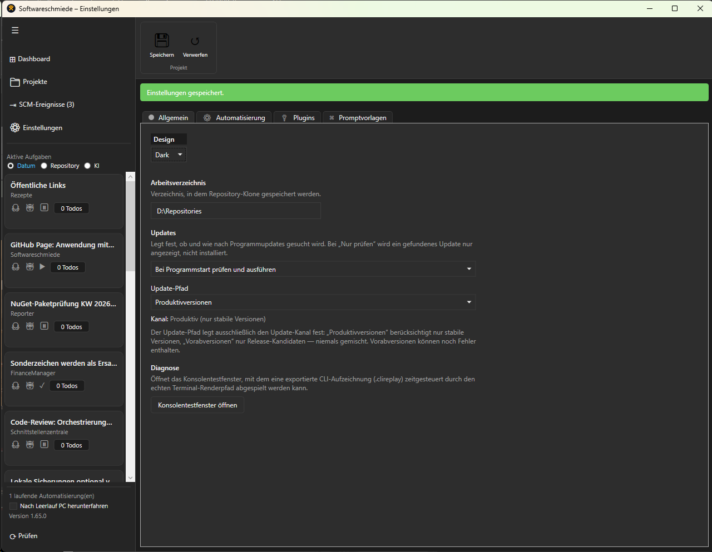

Projekt- und Aufgabenverwaltung
Projekte fassen Git-Repositories und Aufgaben zusammen. Kompakte Aufgabenliste mit umschaltbaren Anzeigemodi, To-Do-Listen, Protokollierung und pausierbaren Aufgaben.
KI-gestützter Softwareentwicklungs-Workflow als lokale Windows-Desktopanwendung.
Softwareschmiede bündelt Projektverwaltung, Aufgabensteuerung, Git-Workflows und die Ausführung von KI-Agenten in einer lokalen Windows-Desktopanwendung. Die Anwendung läuft vollständig auf dem eigenen Rechner und lässt sich über Plugins an die eigenen Werkzeuge und Dienste anpassen.
Die wichtigsten Funktionen im Überblick – vom Aufgaben-Workflow bis zum eingebetteten Terminal.
Projekte fassen Git-Repositories und Aufgaben zusammen. Kompakte Aufgabenliste mit umschaltbaren Anzeigemodi, To-Do-Listen, Protokollierung und pausierbaren Aufgaben.
Projekte werden per Plugin direkt mit GitHub-, BitBucket- oder lokalen Git-Repositories verbunden — die Einrichtung übernimmt die Anwendung, auch wenn das Repository mit einer SSH-Adresse verknüpft ist.
Claude CLI, GitHub Copilot, Codex und Devin laufen interaktiv in einem eingebetteten Terminal direkt in der Aufgabendetailansicht.
PR-Erstellung, Statusanzeige und Review-Integration direkt aus der Aufgabe heraus – vom ersten Prompt bis zum fertigen Pull Request.
Issues und Pull Requests aktivierter Repositories werden überwacht – repository-weit mit Trigger-Keyword oder über die Notifications-Inbox eines separaten Bot-Kontos – und steuern automatisch Aufgaben an.
Update-Prüfung und -Installation gegen GitHub-Releases mit konfigurierbarem Update-Modus, getrennten Kanälen für stabile Versionen und Release-Kandidaten sowie SHA-256-verifiziertem Paket.
Visual Studio für .sln/.slnx und Visual Studio Code als Fallback, Dateiexplorer und Diff-Ansicht direkt in der Aufgabendetailansicht.
Geplante Prompts bleiben auch über Neustarts erhalten und werden zum Zielzeitpunkt zugestellt – mit automatischer Abschlussüberwachung und optionalem Herunterfahren nach Abschluss aller laufenden Automatisierungen.
Ein Blick in die Anwendung – Dashboard, Projektverwaltung, eingebettetes Terminal und SCM-Ereignisse (jeweils im dunklen Design).






Die Softwareschmiede wird über GitHub Releases ausgeliefert. Das aktuelle Release
enthält das fertig paketierte Archiv release.zip für Windows. Die
Anwendung aktualisiert sich auf Wunsch selbstständig über denselben Mechanismus.
Ausführliche Informationen zur Installation, zu den Plugins und zu allen Funktionsbereichen finden sich im Repository.
Quellcode, Issues, Pull Requests und Projektverwaltung der Softwareschmiede.
Überblick über Kernfunktionen, Terminalintegration, Programmupdate und Ereignisüberwachung.
Strukturierte Hilfe zu Aufgaben, Projekten, Terminal, Plugins, Einstellungen und mehr.